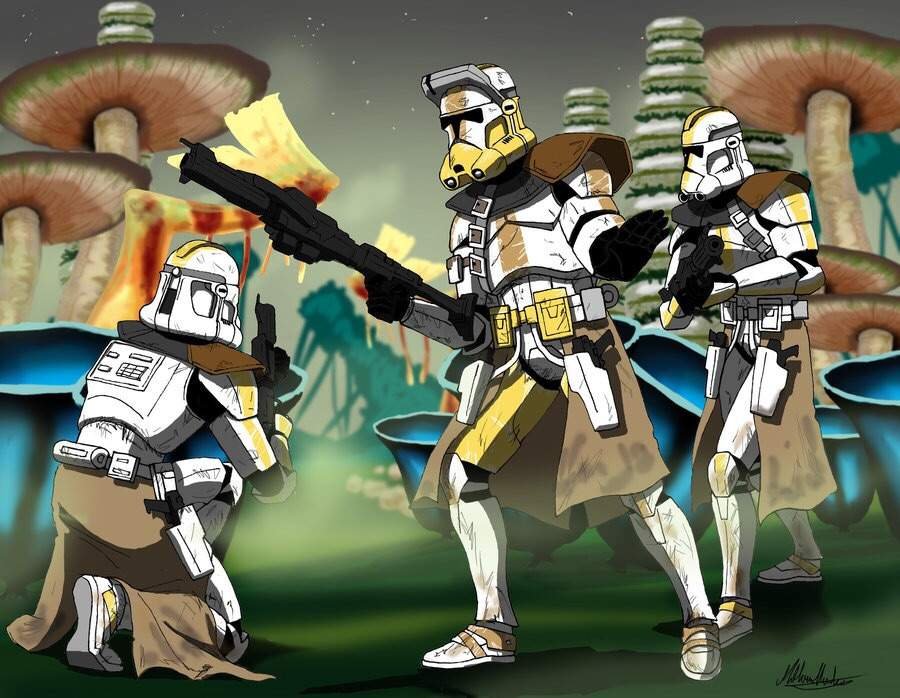

416th Purpose
Home
104th
Purpose
212th
Purpose
416th
Purpose
501st
Purpose
This elite off shoot was meant for many high intensity missions that a front-line force could not handle. However the 327th were a frontline force devised late into the clone wars.

High Command
Second in Command
Jedi General K'Kruhk
Regimental Commander CRC-09/571